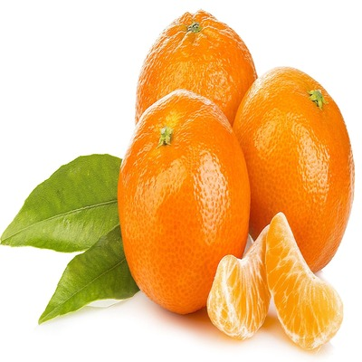

orange
Orange, any of several species of small trees or shrubs of the genus Citrus of the family Rutaceae and their nearly round fruits, which have leathery and oily rinds and edible, juicy inner flesh. A number of species and varieties of orange are economically important, namely the China orange, also called the sweet, or common, orange ; the mandarin orange , some varieties of which are called tangerines; and the sour, or Seville, orange , which is less extensively grown. Common varieties of the sweet orange include the Jaffa, from Israel, the seedless navel, and the Maltese, or blood, orange.After about 12–16 months in the nursery, the trees are usually large enough to bud. When the budded tops are one to two years old, the trees are large enough to plant in the orchard.
The tree of the sweet orange often reaches 6 metres (20 feet) in height. The broad, glossy, evergreen leaves are medium-sized and ovate; the petioles (leafstalks) have narrow wings. Its white five-petaled flowers are very fragrant. The fruit is a modified berry known as a hesperidium, and the flesh is divided into segments called carpels. The usual shape of the sweet-orange fruit is round and the colour of its pulp orange, but there are variations. The mandarin, for example, is distinctly flattened, and the blood orange has red pulp. The pulp of the sweet orange is agreeably acidulous and sweet; the leathery peel is comparatively smooth; and the oil glands are convex. Oranges are picked when fully ripe, for, unlike some deciduous fruits, they do not ripen or improve in quality after being picked. The trees bear abundantly from 50 to 80 years or even more, and some old orange trees whose age must be reckoned by centuries still produce crops.